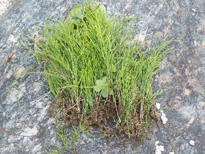
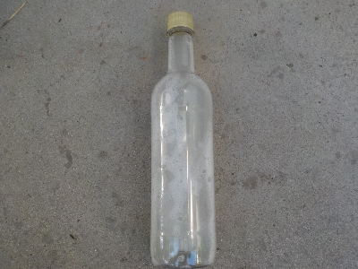
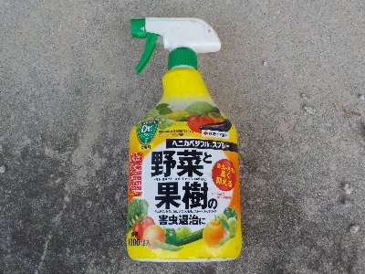
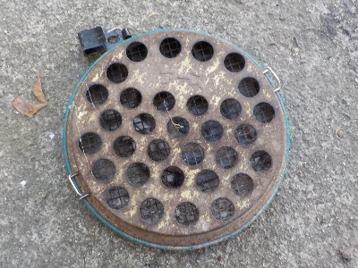
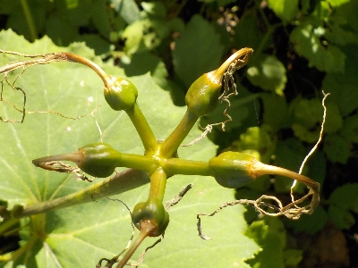
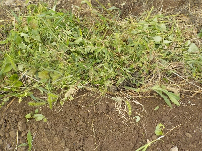
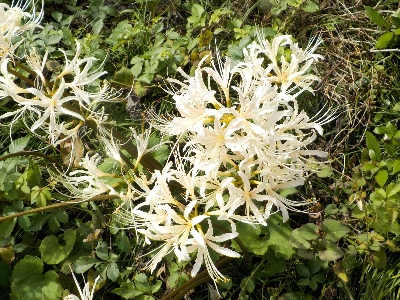

スギナがにょきにょきと出るので抜きました。
2024/10/26

秋で過ごしやすくなったのか、スギナがにょきにょき発生しています。
冬になったら枯れるとは思いますが、暖冬で枯れない可能性もあるし、今栄養を蓄えたら春に大量に発生しそうなので抜きました。
1週間後にはまたスギナが生えているんだろうな。そしてまた抜くんだろうな。
2024/10/26

秋で過ごしやすくなったのか、スギナがにょきにょき発生しています。
冬になったら枯れるとは思いますが、暖冬で枯れない可能性もあるし、今栄養を蓄えたら春に大量に発生しそうなので抜きました。
1週間後にはまたスギナが生えているんだろうな。そしてまた抜くんだろうな。
2024/10/26

納豆菌はいいって聞くので作ってまきました。
本当に効果があるのかな？効果があっても効果があったってわからないんじゃないのかなーと思いながらやりました。
納豆菌はそもそも自然に存在しているので、あえて添加する必要なんてないんじゃないの？って思うんですよね。
でもまあ植木鉢には納豆菌がいないかもしれないので、そこに使うのはいいかな。
2024/10/20

長年詰め替えながら使っていたベニカベジフルスプレーの押す部分が壊れました。
お疲れさまでした。
100均とかで新しく買ってもいいですが、何かで空いたスプレーに詰め替えを入れて使おうかと思っています。
2024/10/12

10月なのでもう使わないでも大丈夫かなと思ってましたが、顔の近くをブンブン飛び回るので蚊取り線香を点けました。
屋外なので煙はよそに流れていきますが、あると安心して作業ができていいです。
2024/10/12

これは白い彼岸花（シロバナマンジュシャゲ）ですが、植えてある場所からちょっと離れたところに新しく生えたりしてるんですよね。
球根をネズミやモグラがほり起こしてそれを鳥とか別の生き物が運べば可能ですが、そんなことするかな？
2024/10/06

いつもは雑草を積み上げて放置したり草抑えでバラまいていましたが、近くで丁度いいスペースがなかったので穴を掘って埋めました。
穴掘るのが面倒でやっていなかったですが、畑だと土が固くないので簡単ですね。
畑の草はドンドン埋めてしまおうと思いました。
2024/10/06

これだけじゃなくて付近のあちこちで今頃ヒガンバナが咲いています。
時期がずれていますが、ふだんよりなんかキレイに見える。自分の家だけじゃなくて、付近のヒガンバナも赤も白もいつもよりきれいな気がする。
過去の日記
畑仕事じゃないよ。